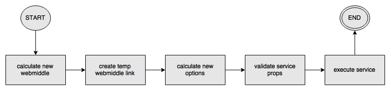

Documentation
Learn how to use the framework effectively.
callVirtual

As previously said, a virtual has a type, attributes and children.
The type can be both a string or a function. If it is a
function, then we call such function “a service”. In terms of JSX, a
type is treated as a string when it begins with a lowercase letter,
example: <article />.
If the type is a string, then there isn’t much to evaluate, everything is returned as is: the result will be the virtual itself, and there will be no change to both options and webmiddle.
1) Finding the webmiddle
If the type is a service, then we start by calculating the webmiddle to use in the recursive call. A service can specify its webmiddle via the static “webmiddle” property; note that this is done automatically when registering a service to a webmiddle.
If the service has no webmiddle, then the current one is used.
Example:
const webmiddle = new WebMiddle();
const MyService = () => { /* … */ }
MyService.webmiddle = webmiddle;
2) Temp link
We then proceed by checking if a temporaneous correlation (link) between the service webmiddle and the current webmiddle needs to be created.
Such correlation is needed in case the service webmiddle and the current webmiddle aren’t already related.
Two webmiddles are said related if they are the same or if they have at least one ancestor in common.
If they are not related, then we create such temporaneous correlation by retrieving the top ancestor of the service webmiddle, by then setting its parent to the current webmiddle. Such linked top ancestor is called “linkedWebmiddle”.
This way, the current webmiddle will become ancestor of the service webmiddle, so that the service will have access to any setting and service of the current webmiddle, if they are not overrode by any of the other ancestors.
3) Options calculation
The options to use are calculated by merging the following options:
Current evaluate options.
Service options specified as static “options” property.
Virtual options specified as “options” attribute.
The merge is in order, meaning that the virtual options override the service options that override the evaluate options.
Any of these options can be specified either directly as an object or as a function returning an object. The options function is called with the same properties that are passed to a normal service, namely:
Any virtual attributes.
The virtual children.
The webmiddle instance (as previously calculated).
The options object, which however is restricted to the currently merged options; for example, the service options function will only get the current evaluate options. This is because the merge is executed in order.
4) Props validation via propTypes
Services can specify the properties they are expecting by means of the propTypes static property and the PropTypes library [19].
Example:
const MyService = ({ url }) => {
/* … */
}
MyService.propTypes = {
url: PropTypes.string.isRequired,
};Such prop types validation is directly extracted from React, thus the user can refer to [20] for details.
5) Service execution
Now that we have the service properties, including webmiddle and options, we are ready to call the service with such properties.
If the service fails, then the “retries” option is used to decide if and how many retries should be attempted. A negative number means infinite retries, while zero means no retries at all.
The retries option can also be specified as a function that, given the error object, returns the number of retries. Note that the function can also return a promise which will be awaited.
Once all the retries have been attempted, the “catch” option is used. Such option is a function that, given the error object, returns (eventually with a promise) what should be used instead as the service result.
Finally, the callVirtual returns the result (obtained by calling the service), the calculated webmiddle and options, and the linkedWebmiddle (if any).